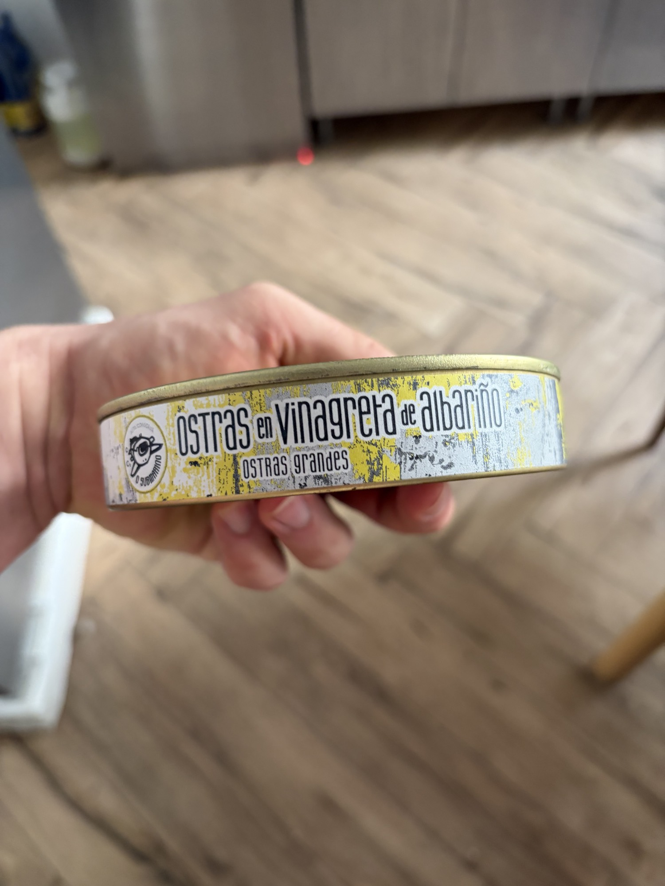

Oysters in Albariño Vinaigrette
Large Galician oysters dressed in Albariño wine vinaigrette. Ready-to-eat luxury.
What It Is
A less common but increasingly celebrated conserva: large Pacific or European flat oysters preserved in a vinaigrette of Albariño wine, olive oil, and aromatics. The specific "Ostras Grandes" format implies size-selected specimens, likely Crassostrea gigas or Ostrea edulis, steamed open, packed with their liquor and the wine dressing. Producers like Ramón Peña and select Galician artisans have explored this format. Quality markers: oysters plump and intact, vinaigrette clear with visible wine sediment or emulsion, aroma of clean shellfish and green apple/wine without sour off-notes.
Nutritional Profile
Per 100g (with vinaigrette):
- Calories: ~110–140 kcal
- Protein: 9–12g
- Fat: 6–9g (from olive oil in the dressing)
- Carbohydrates: 3–5g (from wine sugars and oyster glycogen)
- Zinc, iron, B12: very high (oysters are among the best dietary zinc sources)
- Sodium: ~400–600mg
Preparation & Service
Serve very cold — 4–6°C/39–43°F. The vinaigrette is integral to the experience; do not drain it away. Present the oyster in a small bowl or a deep plate with the vinaigrette as a "bath." A cold shell-shaped dish is apt. Do not heat. Heat destroys the delicate oyster texture and drives off the volatile wine aromatics. Do not rinse. The vinaigrette is the sauce.
Traditional & Modern Eating Context
This is not a deep traditional format — oysters in Spain are usually eaten raw at ostrerías or grilled (ostras a la plancha). The conserva format is modern-luxury, for when fresh oysters are unavailable or when a composed dish is desired. For VIP service, present as an amuse-bouche: one large oyster in its vinaigrette, in a chilled ceramic spoon or small bowl, with a thread of the dressing and perhaps a microgreen.
Flavor & Texture
The oyster texture in good conserva is softer than raw — closer to a barely-poached oyster, yielding and custardy with a slight resistance at the mantle fringe. The Albariño vinaigrette brings high notes of green apple, citrus, and white flowers from the wine, cut with the fat of olive oil and the sharpness of light vinegar. The overall effect is bright, briny, and wine-kissed — an oyster that has been dressed by a sommelier.
Pairings & Composition
- Wines: Albariño (same wine, same region — a terroir lock), brut Cava, or Chablis
- Breads: Very light — a rice cracker or a thin coca — or no bread at all
- Aromatics: Shallot mignonette (redundant but acceptable), fresh dill, cucumber
- Dish idea: Ostra en escabeche blanco — one large oyster in its Albariño vinaigrette, served in a chilled shot glass with a layer of cucumber water beneath and the oyster suspended above. A single grape seed on top for textural contrast.